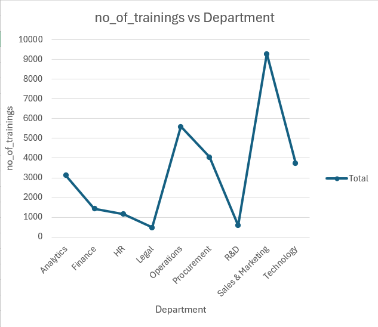
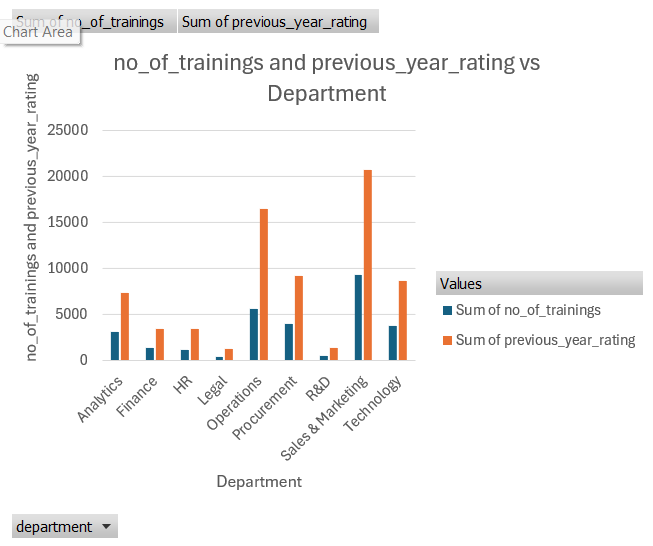
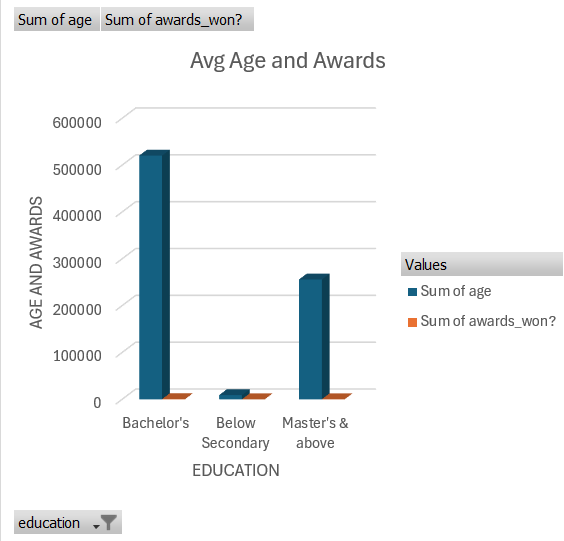

Introduction
In today's data-driven world, HR analytics plays a crucial role in understanding workforce dynamics and making informed decisions. By analyzing various HR metrics, organizations can identify trends, optimize training programs, and enhance overall employee performance. Let's delve into three insightful graphs that shed light on the interplay between training, department performance, and employee demographics.
Graph -1(Number of Trainings vs. Department)
This line chart highlights the distribution of training sessions across different departments. The y-axis represents the number of trainings, while the x-axis lists various departments. Analytics and Procurement departments show a moderate number of trainings, with each having over 3,000 sessions.
Finance and HR departments have the least number of trainings, indicating potential areas for increased training initiatives. Technology and Operations departments exhibit a significant spike, with Technology peaking at around 9,000 trainings.
This suggests a strong emphasis on continual skill development in these areas. The data suggests that departments directly involved with rapidly evolving technologies or complex operations prioritize continuous learning and development to keep their skills relevant.Graph -2(Number of Trainings and Previous Year Ratings vs. Department)
This bar chart provides a comparative view of the number of trainings and the previous year's performance ratings across different departments. The blue bars represent the number of trainings, while the orange bars show the sum of previous year ratings. Technology and Sales & Marketing departments not only lead in the number of trainings but also show high performance ratings, indicating a possible correlation between training and employee performance. Legal and Operations departments have a higher focus on training but relatively lower performance ratings.
This might highlight a need for more effective training programs or other factors affecting performance. HR and Finance departments, despite having fewer training sessions, maintain moderate performance ratings, suggesting efficiency in their training methodologies or other contributing factors to their performance.
This comparison underscores the importance of aligning training programs with performance goals to ensure that training investments translate into improved outcomes.Graph -3( Average Age and Awards by Education Level)
This bar chart examines the relationship between education levels, average age, and awards won. The y-axis measures the total sum of age and awards won, while the x-axis categorizes employees by their highest education level. Employees with a Bachelor's degree have the highest sum of age, indicating a significant portion of the workforce is mid-career professionals. They also lead in the number of awards won, suggesting experienced employees contribute significantly to organizational success. Those with Master's and above education show a moderate sum of age and awards, reflecting the value of advanced education in achieving excellence. Employees with education levels below secondary have the least sum of age and awards, highlighting a potential area for developmental focus. This analysis suggests that investing in higher education and recognizing achievements can foster a motivated and skilled workforce.